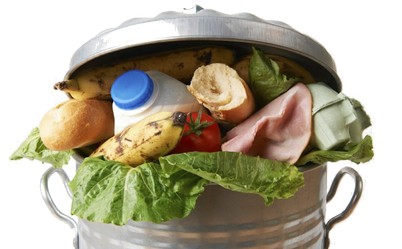
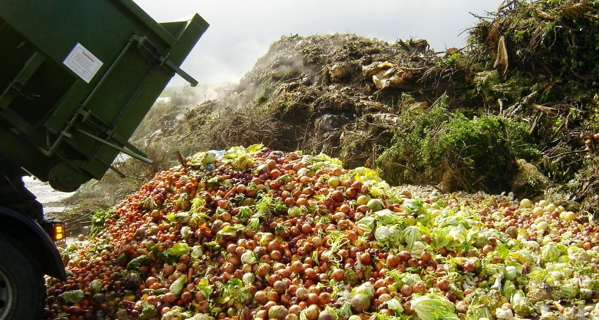
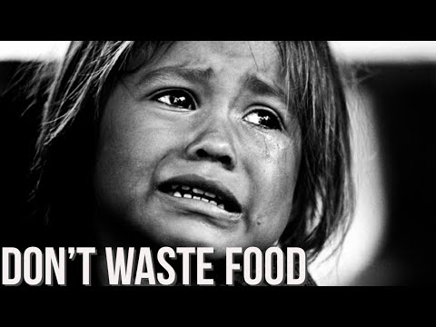

DMM - "Fix dit madspild, det er tid til at stoppe"
DMM - "Fix dit madspild, det er tid til at stoppe"
DMM - "Fix dit madspild, det er tid til at stoppe"
DMM - "Fix dit madspild, det er tid til at stoppe"
- "In Denmark alone, we each year waste 700,000 tons of food that could have
been eaten. The food waste costs Danish consumers more than 11 billion DKK
a year. The households waste more than 260,000 tons of food per year and
the food industry 133,000 tons.
That is why food waste is a huge problem, which is not only expensive, but
also exhausting of our resources and our environment. More than one third
of the damaging impact on the environment from food production is caused by
food waste and, therefore, could have been avoided – or alternatively used
for global communities, who does not have adequate amounts of nutritional food." |
 |
 |
“To me, it’s sort of funny that wasting food is not taboo.
It’s one of the last environmental ills that you can just get away with.”
|
“Together, we can reverse this unacceptable trend and improve lives. In industrialised regions, almost half of the total food squandered, around 300 million tonnes annually, occurs because producers, retailers and consumers discard food that is still fit for consumption.” – José Graziano da Silva, Director-General of Food and Agriculture Organization of the United Nations. |
 |
|  |